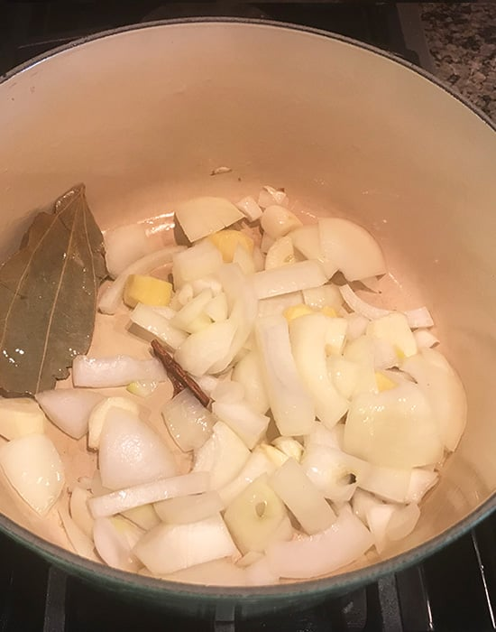

Paneer Butter Masala

Welcome! If you're here, you're probably craving a rich, creamy plate of Paneer Butter Masala. This classic Indian dish brings together soft cubes of paneer in a velvety tomato and butter gravy that's both indulgent and comforting.
This recipe is designed to be simple and approachable, with clear steps and ingredients that are easy to find. Whether you're cooking for family, friends, or just yourself, this paneer butter masala will make any meal feel special.
Ingredients
Paneer
- 250g fresh paneer, cut into cubes
Tomato-Cashew Gravy
- 2 medium tomatoes, roughly chopped
- 10-12 cashews, soaked in warm water for 15 minutes
- 1 medium onion, roughly chopped
- 1 inch ginger piece
- 2-3 garlic cloves
For Cooking
- 2 tbsp unsalted butter
- 1 tbsp oil
- 1 tsp kasuri methi (dried fenugreek leaves)
- ½ tsp garam masala
- ½ tsp red chili powder
- ¼ tsp turmeric powder
- Salt to taste
- 1 tsp sugar
- 2-3 tbsp fresh cream
For Garnish
- Chopped fresh coriander leaves
- A few saffron strands soaked in 1-2 tbsp warm milk
Preparation
Step 1: Cook Onions with Spices
Heat 2 tbsp butter or oil in a pan. Add chopped onions, ginger, and garlic. Sauté until the onions turn golden brown and aromatic.
Step 2: Cook Tomatoes
Add chopped tomatoes to the pan and cook on medium heat until they soften and release their juices.
Step 3: Blend the Onion-Tomato Mixture
Transfer the cooked onion and tomato mixture into a blender. Blend until smooth and creamy.
Step 4: Masala Paste
Your smooth masala paste is now ready to cook further with spices and cream for the gravy.
Step 5: Temper Spices
Heat butter or oil in a pan. Add red chili powder,turmeric and fry briefly to release aroma.
Step 6: Cook the Gravy
Pour the blended masala paste into the pan. Add garam masala, cream, salt, and sugar. Simmer gently for 5 minutes.
Step 7: Add Paneer
Gently fold in the paneer cubes. Cook for 3-4 minutes, ensuring the paneer absorbs the creamy masala without breaking and then add kasuri methi.
Step 8: Serve and Enjoy
Transfer the paneer butter masala to a serving dish. Garnish with coriander leaves and serve hot with naan or steamed rice.
Recipe Notes
Paneer quality: Use fresh, firm paneer to avoid it breaking while cooking.
Cooking masala: Cook the onion-tomato paste well to remove raw flavors and get a smooth gravy.
Spice balance: Adjust chili and garam masala according to taste, but follow the recipe for authentic flavor.
Simmer gently: Keep the gravy on low heat once paneer is added to prevent curdling or sticking.
Serving suggestion: Serve hot with naan, roti, or steamed rice for the best experience.
Storage tip: Leftovers can be refrigerated for 1-2 days. Reheat gently on low heat with a splash of cream.
You Might Also Like

Veggie Lasagna |

Hyderabadi Chicken Biryani |

Tiramisu |